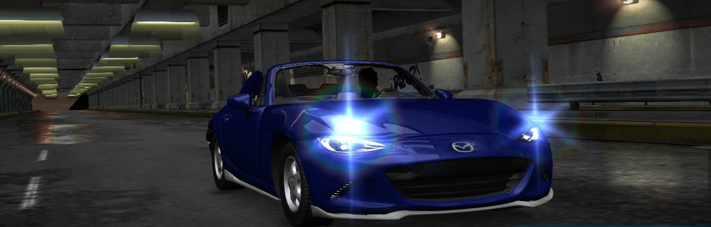
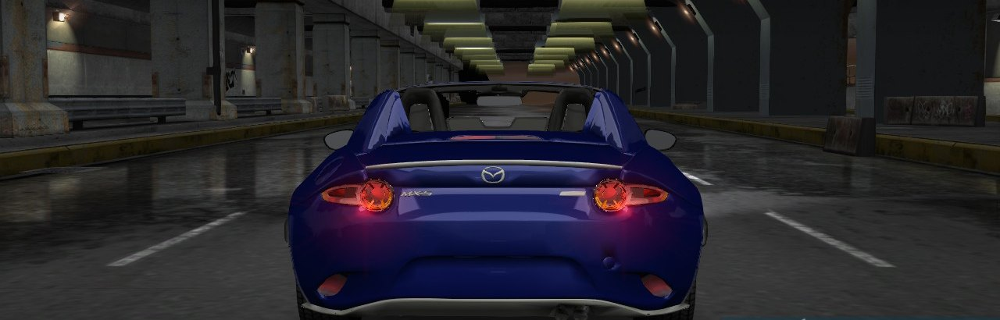

Version Xbox USA, jouée sur Nintendo Switch avec le portage nfsu1-sw. La MX-5 RF prend la place de la Mazda Miata, avec son son moteur. Tout est fabriqué sur ton PC à partir de tes disques et du modèle : aucun fichier du jeu n'est fourni ici.
Il te faut :
.iso (le portage tourne avec cette version) ;nfsu1x.zip (releases de nfsu1-sw) ;mazda_mx5_rf.kn5 du mod Assetto Corsa
Mazda MX-5 RF Hardtop, à extraire.Télécharge le paquet, mets ces fichiers dans son dossier, double-clique sur FABRIQUER.bat et réponds à ses questions
(jeu, langue, toit…). Quelques minutes plus tard, le dossier est dans SD_nfsu1x. Sans Python sur le PC, il télécharge
une copie portable officielle (python.org) dans son propre dossier : rien n'est installé dans Windows.
Un seul paquet pour les deux jeux : le même fabrique le dossier d'Underground 2. Le disque extrait fait plusieurs Go, c'est pour ça que ça se fait sur le PC et pas dans le navigateur.
sdmc:/switch/nfsu1x/game/UDATA ailleurs : tes sauvegardes sont dedans.switch de SD_nfsu1x à la racine de la carte, par-dessus (fusionner, remplacer les fichiers). Ne supprime ni ne remplace jamais tout le dossier game de la carte.
Comment ça marche (le jeu remplace les textures des feux par leur version allumée, les cinématiques françaises, les formats) : le README sur GitHub. La langue, le chargement automatique et le builder du dossier de la carte ont aussi été proposés au portage : #8, #9, #10.